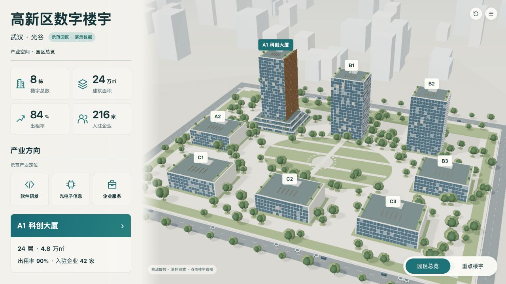
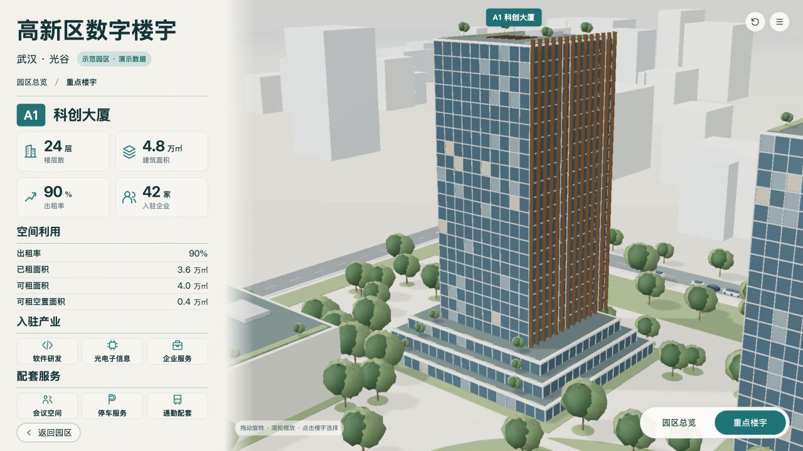

初次细化后复核，默认园区/A1近景，演示快照；使用该版制作相机，无自动巡览。
两图保留原始比例，AI图不具备测绘精度；对照不把AI不可数细节当作工程数据。浏览器截图是实际WebGL画面。



| ID | 预期 | 实际 | 原因假设 | 源修改 | 重建/复验证据 | 结果 | 后续 |
|---|---|---|---|---|---|---|---|
| V-01 | 中性日光下建筑、景观清楚 | v1偏白，v4减曝光并补180棵庭院树；蓝灰幕墙层次仍少 | 环境反射偏平、材质缺纹理 | 降低曝光，增加冠层簇和屋顶种植 | campus-detailed-v1.jpg → campus-detailed-v4.jpg | 局部改善 | 继续补材质细节 |
| V-02 | 近景低视点完整展示三级退台 | 近景俯视偏高 | 相机高度/目标点偏离基准 | 后续v5/v6降低眼点，缩小翼片厚度 | building-detailed-v4.jpg | 待后版复验 | 保持同一几何校准相机 |
| E-01 | 绘制调用≤350 | 454次描边渲染变为167次 | 全场景描边额外绘制过多 | 按同源规格创建少量EdgesGeometry | performance-v6.txt及后续性能记录 | v4技术优化已实测 | 新增AO后重新测量 |
[
{
"level": "campus",
"baseline": "design/concepts/B-campus-v2.png",
"baselineSha256": "b7256276a9357e0255ac1799e189de000f3c69563e0672624b826acfb76db264",
"actual": "checks/campus-detailed-v4.jpg",
"actualSha256": "51c35e01b9444488633bff4edb88859962e170d8312d148bd9b07390a40f8b91"
},
{
"level": "building",
"baseline": "design/concepts/B-building-v2r1.png",
"baselineSha256": "1aa5b6d94d1b17ae9b7eb815fa59fa75c1f0f44f88a9f2e41045d85aae8f43e4",
"actual": "checks/building-detailed-v4.jpg",
"actualSha256": "270d91bb91f4e4f5e18af52bc5facce302639147afca68574e7d2af4c64d805c"
}
]